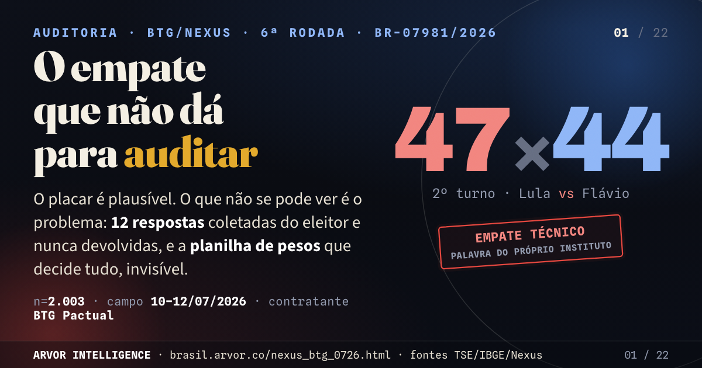

Mais recente

O empate que não dá para auditar
A BTG/Nexus põe Lula em 47% e Flávio Bolsonaro em 44%. Empate técnico — palavra do próprio instituto. O placar é plausível, e não é aí que mora o problema. O problema é a régua: a margem da diferença é de ±4,18, não o ±2 do release, e a mesma pesquisa rende de +1,4 a +4,0 conforme a régua oficial que se escolha para reponderar. Quem escolhe a régua escolhe a manchete — e a Nexus não publica a régua.
47×44o próprio instituto chama de empate técnico
±4,18a margem da diferença, não o ±2 do release
+1,4 → +4,0quatro placares para a mesma pesquisa, conforme a régua